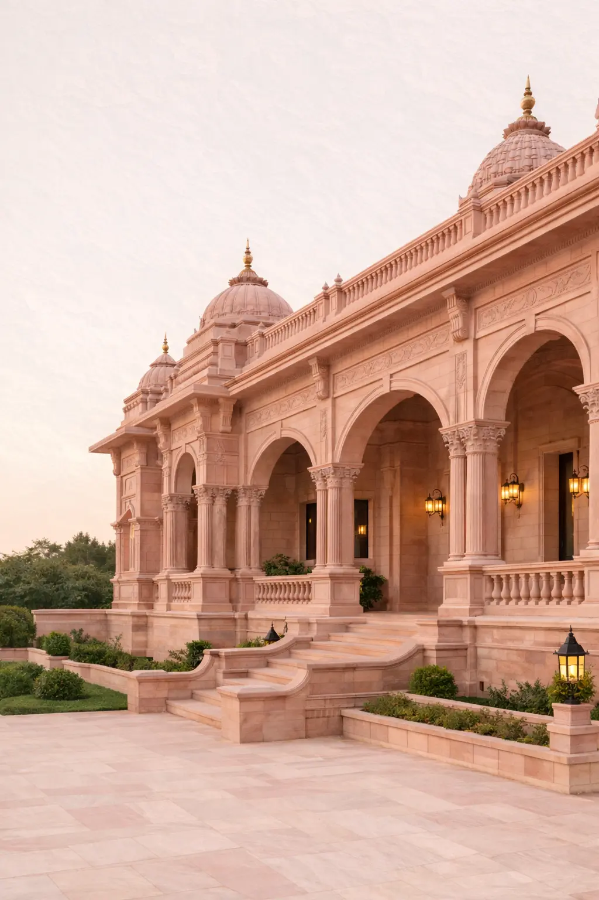
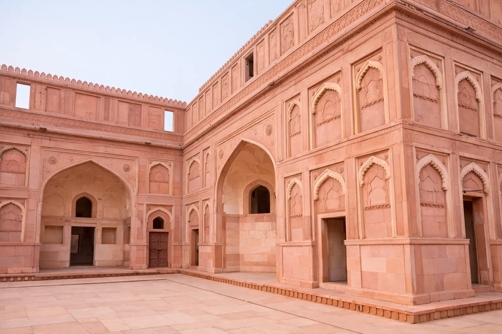
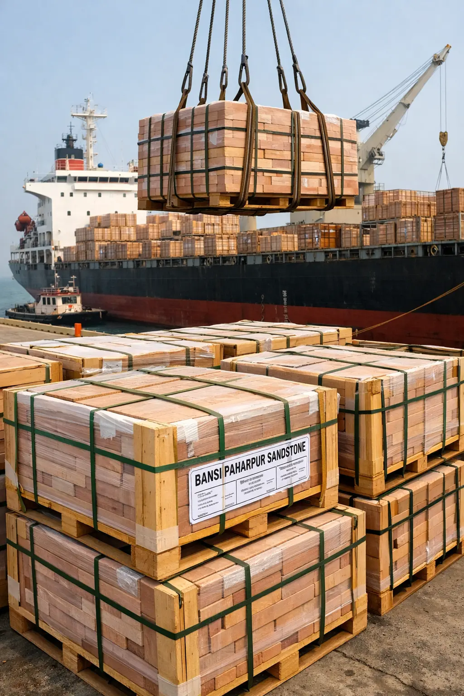

Bansi Paharpur Pink Sandstone is a fine-grained natural stone extracted from the Bansi Paharpur region of Rajasthan, India. Known for its soft blush tone and uniform structure, the material is widely used in temple construction, classical architecture and heritage restoration projects.
ANAY Premium Stone manufactures and exports Bansi Paharpur Pink Sandstone for architectural developments including temples, luxury villas, carved facades and monumental buildings worldwide.


The stone is quarried in the Bansi Paharpur belt of Rajasthan, a geological region known for producing dense and durable architectural sandstone widely used in historical temples and monumental Indian architecture.
Fine grain structure allows CNC machining and hand carving for detailed architectural elements.
Soft pink tone provides uniform architectural appearance across large facades.
Natural sandstone suitable for long-term outdoor architecture and monumental construction.
ANAY Premium Stone supplies Bansi Paharpur Pink Sandstone globally for architectural projects including temples, luxury villas, resorts and heritage developments.
Manufacturing capabilities include slabs, tiles and custom cut-to-size stone components produced according to project drawings and specifications.
